Nuestro primer paso será la descarga de XAMPP para Windows 10 desde su web oficial :
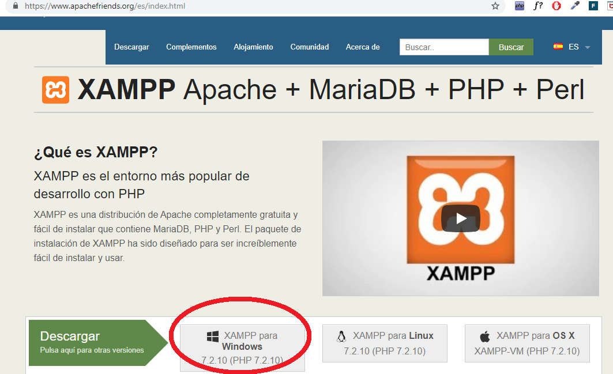
Una vez localizado el lugar donde se realizó la descarga ejecutamos como administrador el archivo.
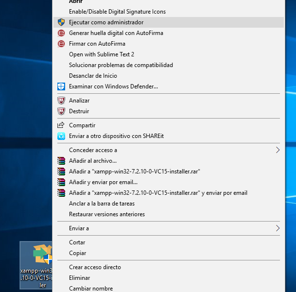
Nos saldrá la siguiente pantalla, debido al control de cuentas del usuario:
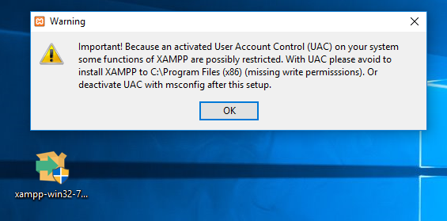
Pulsamos OK para seguir con la instalación, y en la siguiente pantalla Next para continuar con la
instalación.
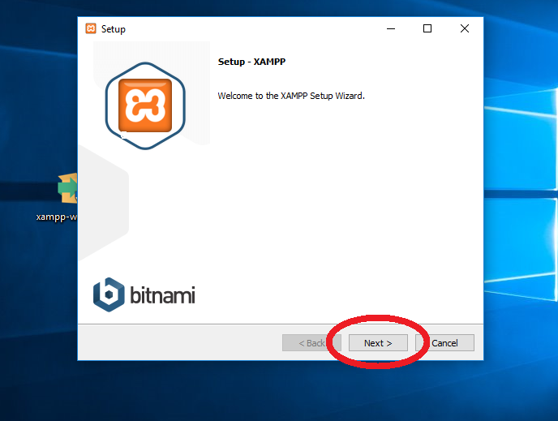
En la siguiente ventana podemos configurar el programa a nuestro gusto, en mi caso seleccionaré todas
las opciones para optimizar mi trabajo con XAMPP.
Seguimos la instalación pulsando NEXT:
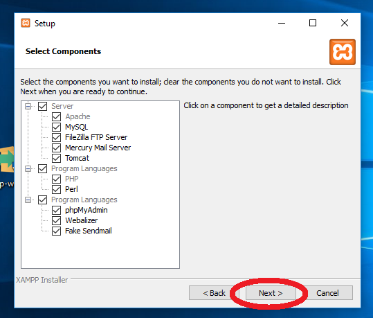
Dejamos el lugar de la instalación por defecto. Pulsamos NEXT.
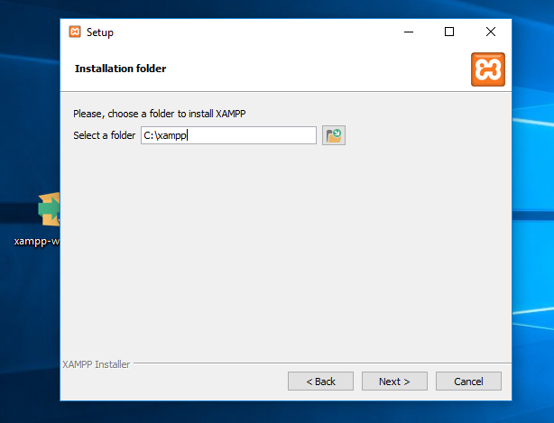
En la siguiente pantalla vemos como nos informan que podemos utilizar distintos CMS con XAMPP como
wordpress, Joomla , etc.
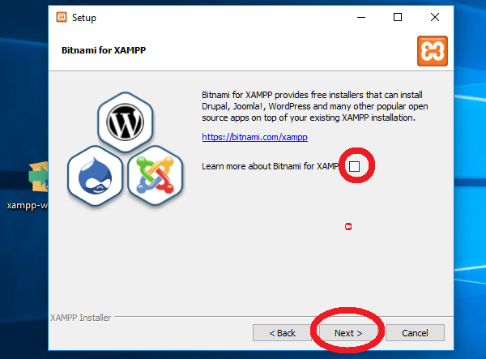
Instalación lista para comenzar:
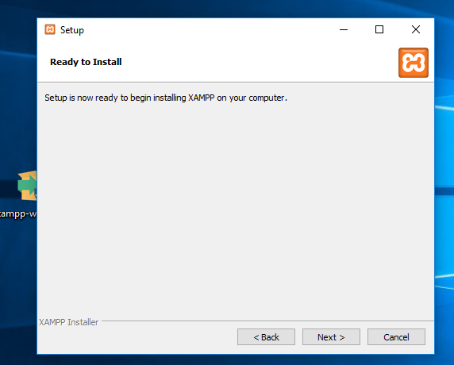
Comienza la instalación./
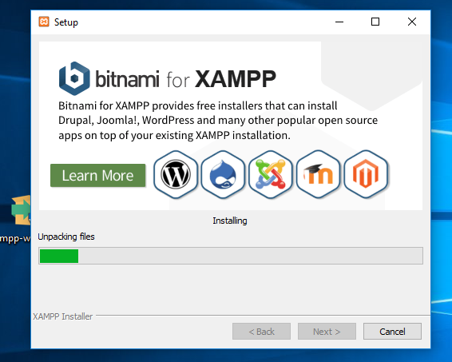
Finalizando la instalación nos saldrá una ventana informando sobre el firewall de windows, ya que
nuestro uso será privado continuamos por defecto permitiendo el acceso.
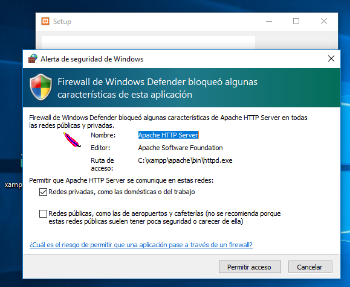
Se nos informa de la instalación con éxito de XAMPP , marcamos la opción de abrir el panel de control ya
que debemos realizar configuraciones.
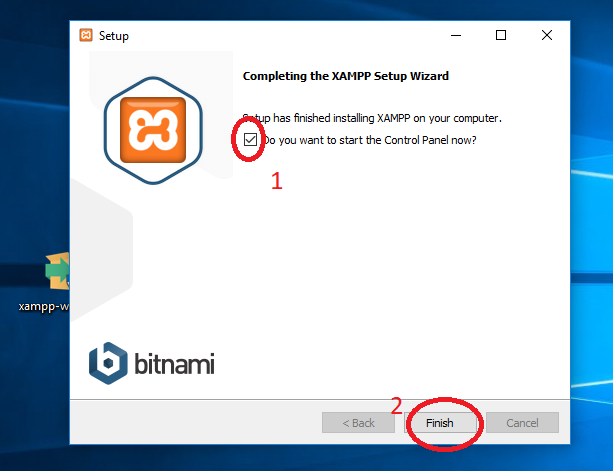
Seleccionamos idioma, en este caso inglés.
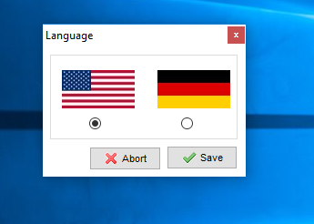
Y tendremos la siguiente pantalla.
Aquí arrancaremos el módulo de apache y mySQL pulsando el botón START (a su derecha). Firewall nos
pedirá de nuevo confirmación con mySQL.
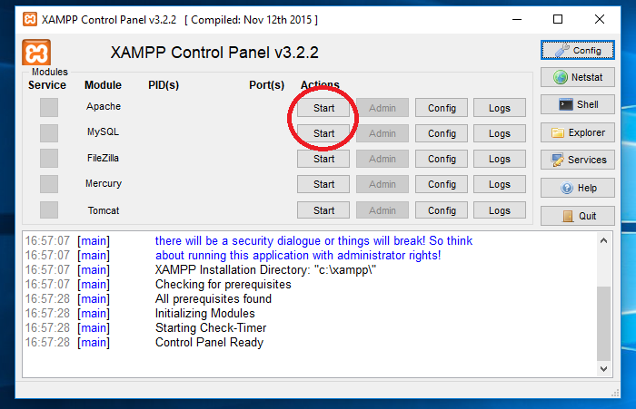
Seguimos con la configuración, en este caso pulsando el botón config.
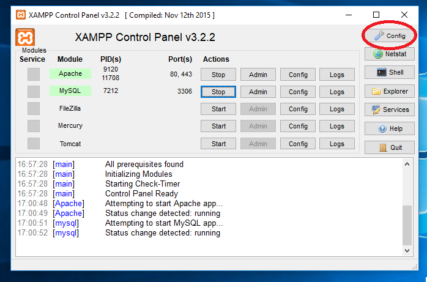
Aquí podremos seleccionar que módulos se autoiniciarán. En nuestro caso, queremos Apache y mySQL ya que
es el propósito.
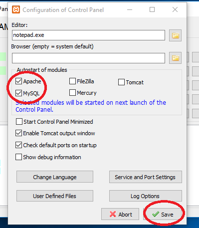
¿Hemos realizado bien la instalación? Lo comprobaremos con un navegador con la siguiente dirección:
localhost. Si vemos la siguiente pantalla, todo está correcto.
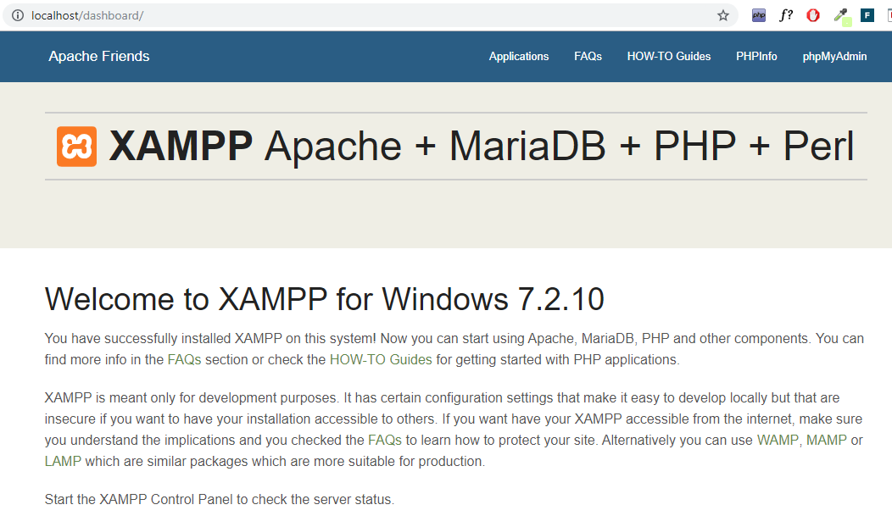
También comprobaremos qye MySQL también está trabajando correctamente. Para ello utilizaremos
también un navegador, en este caso la dirección será http://localhost/phpmyadmin .
Si todo está correcto, veremos la siguiente pantalla:
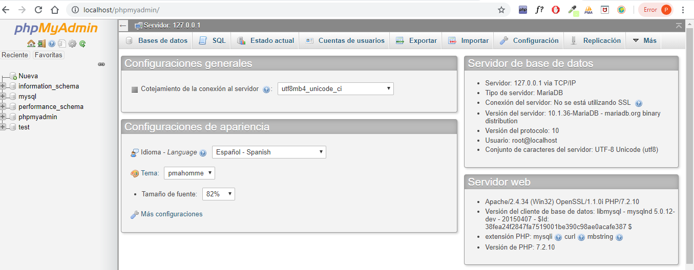
Para finalizar realizaremos un Hola 2DAW! en PHP y lo mostraremos.
Para ello hemos creado la carpeta DWES en la siguiente ruta de xampp:
C:\xampp\htdocs\DWES
Dentro de la carpeta hemos creado un archivo PHP con el saludo, el sencillo código es el siguiente:
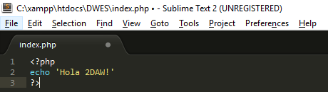
Vemos su resultado en el navegador a través de la siguiente dirección:
http://localhost/DWES/index.php 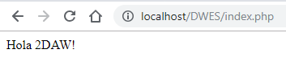
Bibliografía:
- Apuntes de la plataforma para respuestas teoría.
- https://www.digitalocean.com/ Como guía en caso de
dudas.
- https://www.digitalocean.com/ Para la instalación y
configuración de Apache Tomcat.